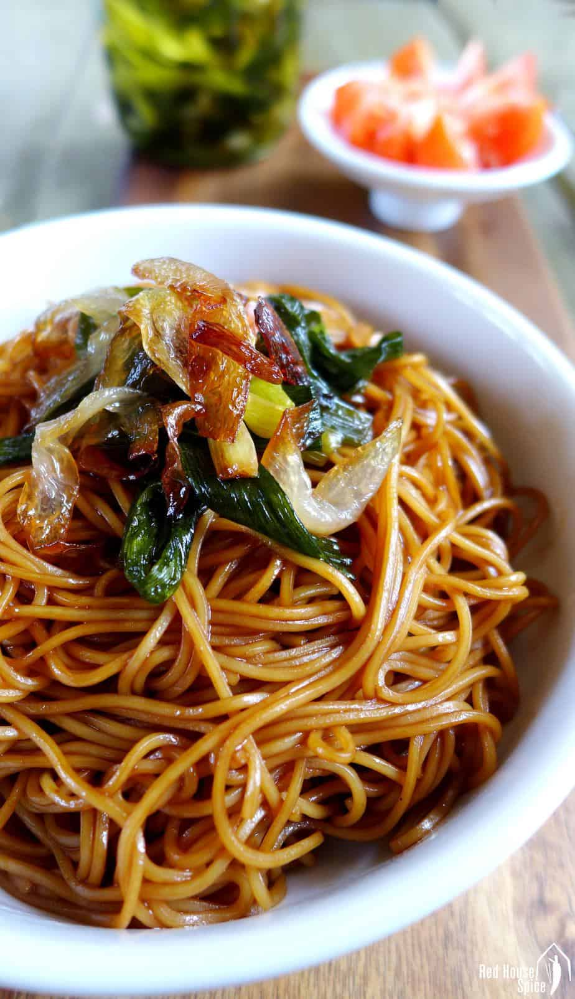

Shanghai Spring Onion Noodles

Ingredients:
- 4 tablespoon cooking oil
- 5 stalk spring onion, cut into long sections
- 2 tablespoon light soy sauce
- 2 tablespoon dark soy sauce
- 2 teaspoon sugar
- 400 g dried thin, round noodles
Instructions:
-
Take the onion out and set aside (see note). Add soy sauce and sugar
to the oil.
- Cook until the sauce starts to bubble. Turn off the heat.
-
Meanwhile, bring a large pot of water to a boil. Cook noodles
following the instructions on the package.
-
Drain then briefly rinse under running water. Place noodles in the
wok.
- Stir well to evenly coat the noodles with the sauce.
-
Portion out the noodles into 4 serving bowls. Top with fried spring
onion.